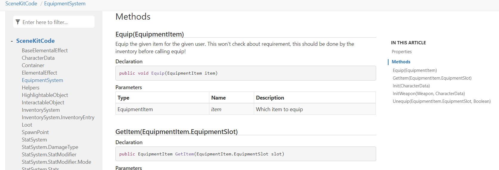

Welcome to the Creator Kit Beginner Code Documentation
This website act as a documentation Hub for the Beginner Code Scene Kit.
This website is similar in style to the documentation website that you can find in Unity Packages, so navigating it will familiarize you with searching and reading documentation for those package.
Usage Tips
Some tips to use documentation in Unity efficiently. When you stumble on something you don't know in code, the step you can take :
- The first step is to go on the Scripting Reference website and use the top right search box to research the function/class you don't know
- In most IDE, hovering above the unknown function/class will show you the full name in the form
UnitySomething.MyClass.Func. This can give you an idea of which package that function/class is part of (e.g. something nameCinemachine.Somethingis probably from the Cinemachine package). So go to the menuWindow > Package Manager, look for package with that name, and click view documentation. This will open a website similar to that one, and click on Api Documentation on top to see the full API and search for the class there.
Using this website API Documentation
Contrary to Unity website you can search as easily for a function name on that website, you need to find which type it is part of (see above for how to find the full name containing the type). Once you have that type, you can find that class in the API Documentation and click on it. You have a menu on the right of the page on each type to quickly see Fields/Properties (variables) and methods (function) in a class. See the example below that show the methods of the class EquipmentSystem from the Creator Kit
